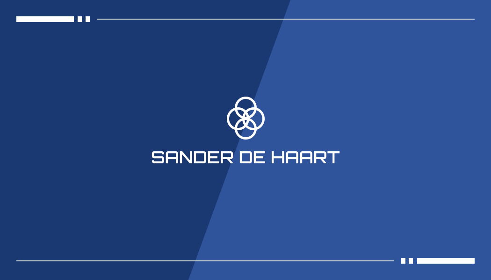
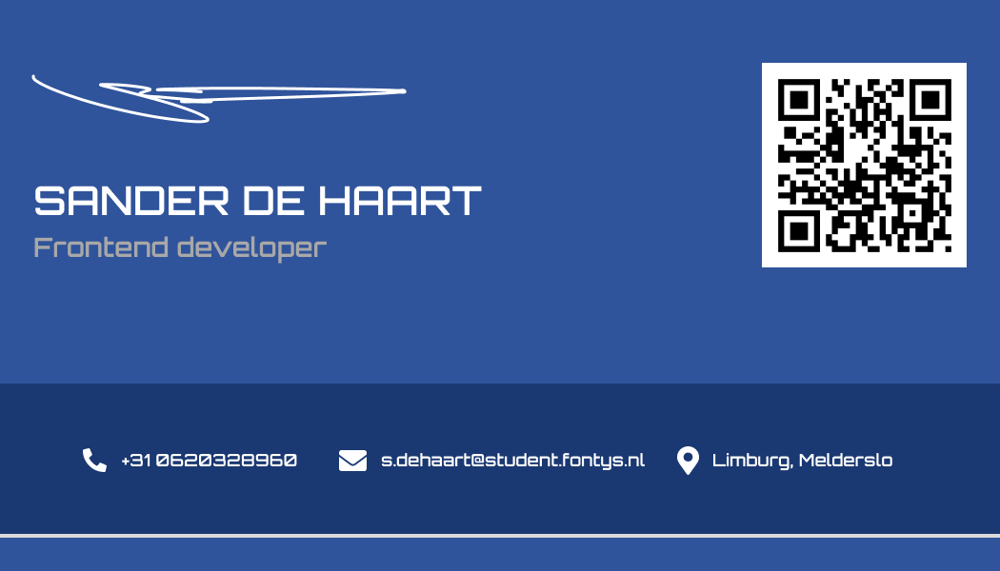
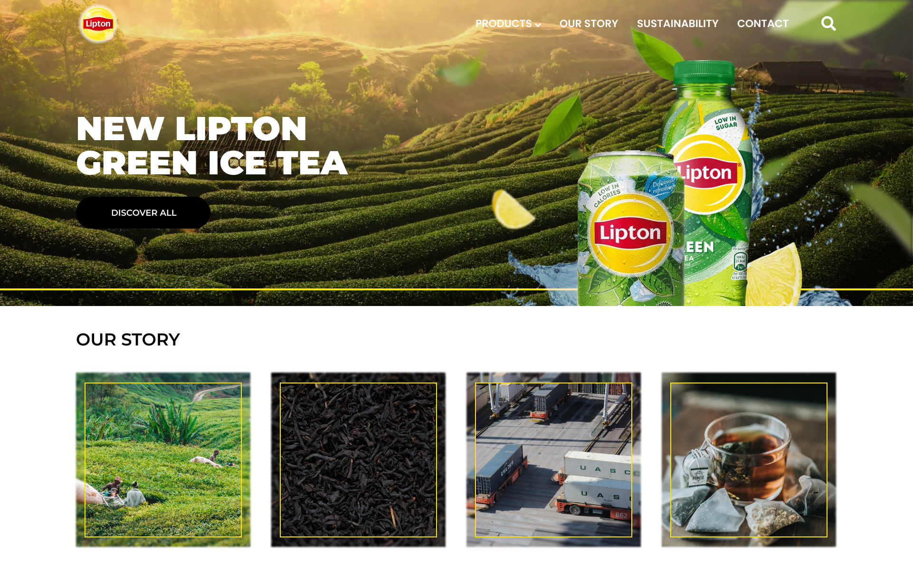
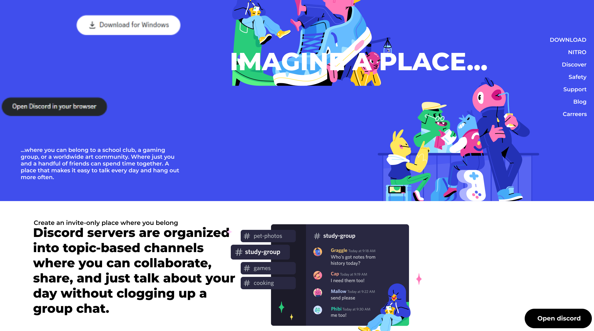
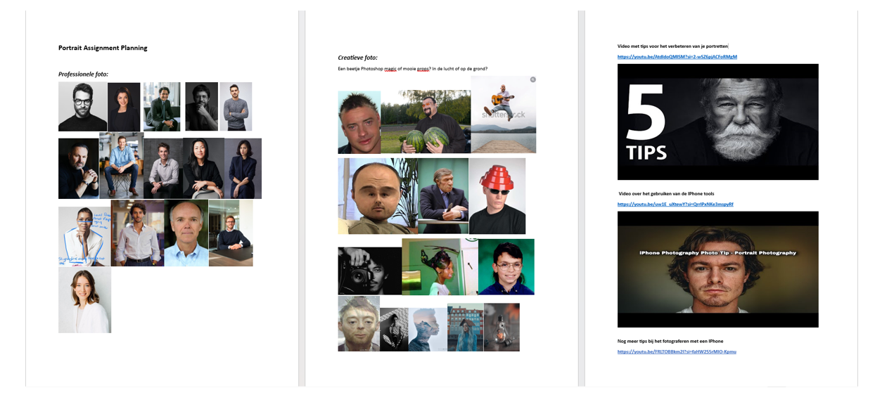
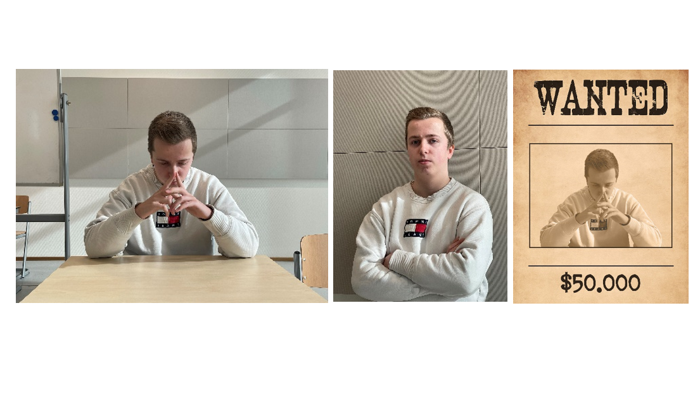
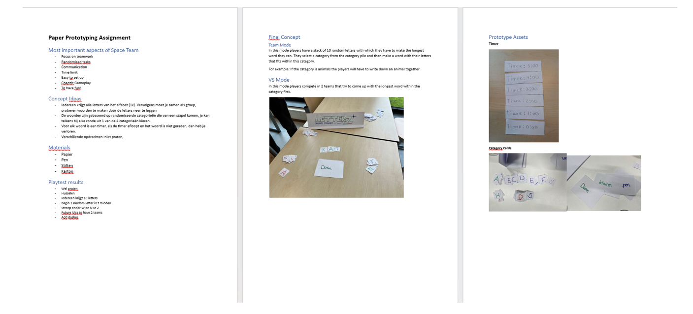

Introduction
During the introduction week, our group consisted of five people: one from semester 3 and four from semester 2. Throughout the week, we collaborated on four main tasks: designing a business card, creating a portrait, revamping a brand, and developing a paper prototype for a game. We worked closely together, discussing ideas collectively. Although there were moments when individual work was necessary, our focus remained on effective communication within the group.
LO1 - Interactive media products
Business Card
During the introduction week, our group focused on creating business cards. Before diving into the design process, we conducted research to understand current trends in business card design. like Pinterest and Behance to identify what makes a business card visually appealing. Through this exploration, we concluded that colour, consistency, and typography are key elements in crafting an effective business card. I used Figma for this, normally u would make it with Illustrator, but on this weekday I had no access to that unfortunately. Professionals would definitely should Illustrator.
After this initial research phase, we individually worked on designing our own business card prototypes using tools like Figma or Illustrator. Drawing inspiration from a mood board of liked business card designs, we iterated on our prototypes to reach a final version.
To gather feedback and improve our designs, we conducted a small testing session within our group. Feedback highlighted the need to add a personal touch to the business cards and avoid simplicity. And as last in this process I learned even small feedback from these people can help make your product better.
 UX Overhaul
To start this task, we first identified the key aspects of good and bad design. Using Figma, I aimed to create a modern design by incorporating elements outlined in the document focused on modern designs. I developed both a good and a bad interactive design inspired by existing websites. The following day, I tested these designs within the group to gauge their effectiveness.
When I look back its again important to have feedback and I found it really helpful.
 Portrait
For the portrait component of our project, we researched professional and creative portrait styles to understand the nuances between them. We identified key aspects such as positioning, facial expression, and composition for professional portraits, contrasting with the more dynamic and unconventional approach needed for creative portraits. With these aspects in mind, our group took turns photographing each other, focusing on capturing the key elements discussed. We then presented our photos to others, receiving positive feedback on our attention to detail regarding factors like lighting, composition, and shadow.
This went very well, because I was getting directly feedback from my teammates and it helped me with understanding the factors of taking a picture.
 Game Paper Prototype
Analysing the Space Team game, we identified important aspects such as teamwork, randomized tasks, communication, and chaotic gameplay. Using paper, pen, markers, and cardboard, we prototyped a game concept where players work together to form words within a time limit.
Through testing phases, we refined our prototype, addressing issues like the need for communication during gameplay, shuffling the card pile, and providing clearer instructions for players. Our final concept included both team and versus modes, promoting collaboration and competition respectively.
Throughout the introduction week, I took on a leadership role within our group, ensuring tasks were completed and providing support to team members. This experience allowed me to develop skills in teamwork, leadership, and receiving and implementing feedback, which will be valuable in my future endeavours as a frontend developer.
Watch video LO4 – Professional standard
During some of these activities, such as the game paper prototype, we presented our idea or product to our teacher, who acted as the stakeholder. We conducted a playthrough of the game with the teacher and received feedback from them. Subsequently, we discussed the main feedback received and used it to inform our findings (Findings in LO1 – Game paper prototype).
LO5 – Personal leadership
During the whole introduction week process. I made sure in our group we've finished everything and I set myself a role as leader, because I tried to manage the whole process and help my group members and give feedback on certain things such as research methods and basic design skills. And asked feedback on our processed such as our game paper prototype were we got feedback from our stakeholder and used that feedback to enhance our prototype and grow from that during our design/thinking process. In this process I have grown in many things such as learning to coop with people in a short period of time and still get a lot of things done and that is really nice to have this opportunity, because it definitely will happen later when I am a frontend developer that you have to work with other people u don’t know and still have to manage to get good quality of product.